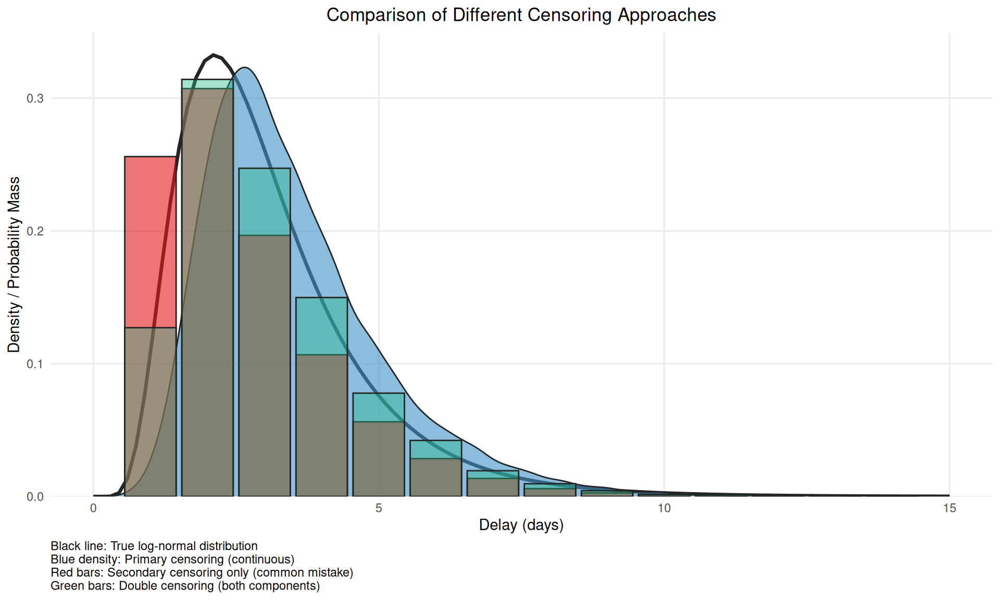
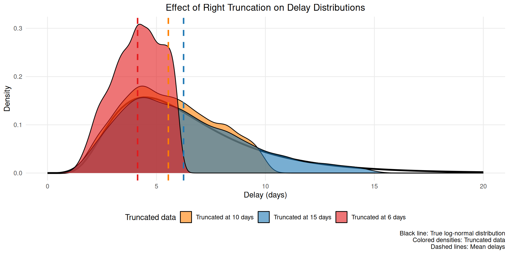
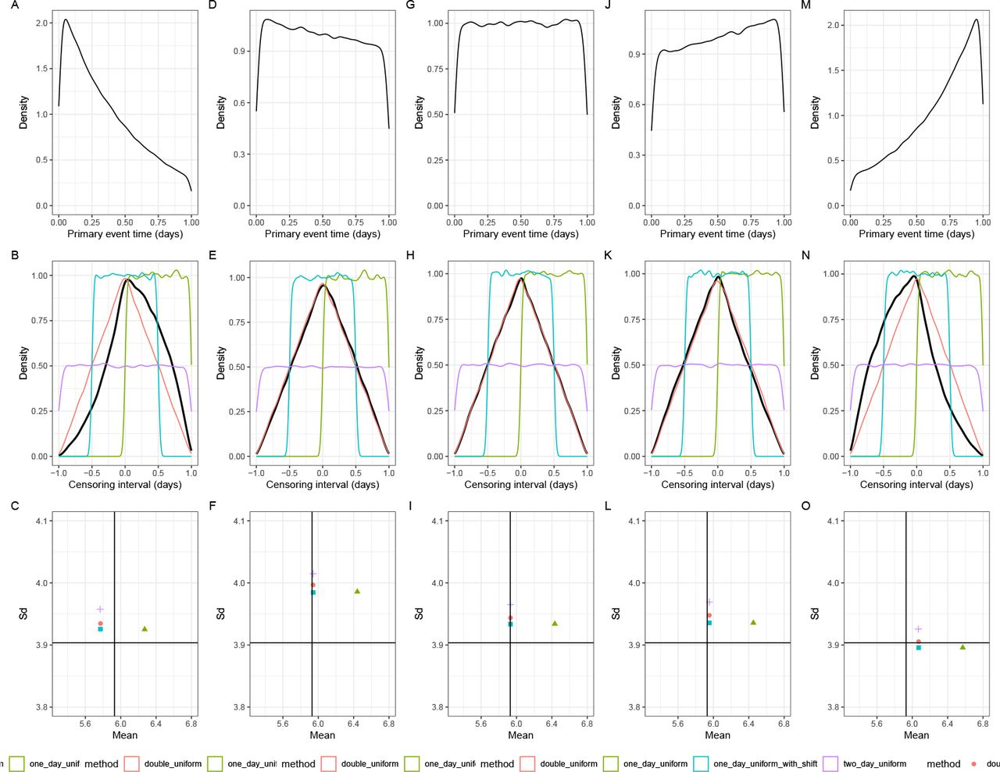
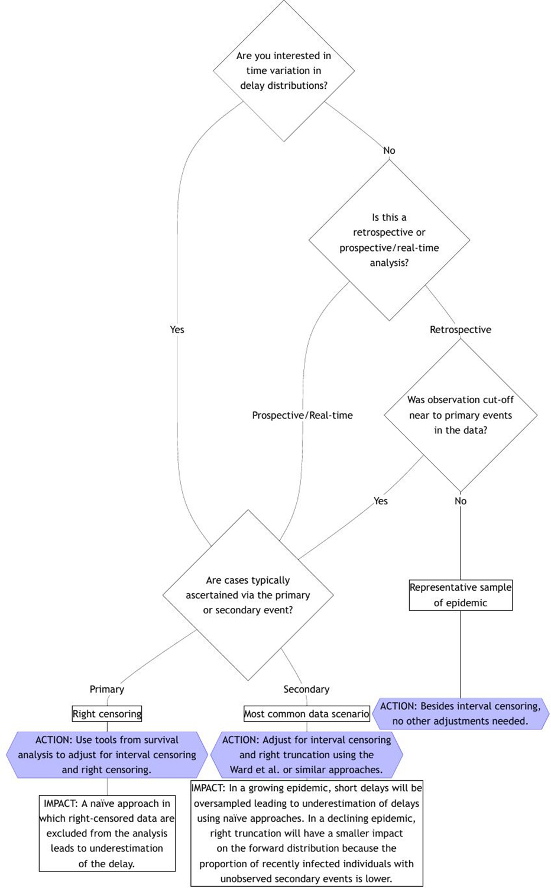

library("nfidd")
library("ggplot2")
library("dplyr")
library("tidyr")
library("purrr")
library("lubridate")
library("tidybayes")Biases in delay distributions
Introduction
So far, we’ve looked at the uncertainty of the time delays between epidemiological events. The next challenge is that our information on these delays is usually biased, especially when we’re analysing data in real time. We’ll consider two types of biases that commonly occur in reported infectious disease data:
- Censoring: when we know an event occurred at some time, but not exactly when.
- Truncation: when not enough time has passed for all the relevant epidemiological events to occur or be observed.
We can again handle these by including them as uncertain parameters in the modelling process.
Slides
Objectives
In this session, we’ll introduce censoring and right truncation as typical properties of the process that generates infectious disease data sets, using the delay from symptom onset to hospitalisation as an example.
NoteSetup
Source file
The source file of this session is located at sessions/biases-in-delay-distributions.qmd.
Libraries used
In this session we will use the nfidd package to load a data set of infection times and access stan models and helper functions, the ggplot2 package for plotting, the dplyr and tidyr packages to wrangle data, the lubridate package to deal with dates, the purrr package for functional programming, and the tidybayes package for extracting results from model fits.
Tip
The best way to interact with the material is via the Visual Editor of RStudio.
Initialisation
We set a random seed for reproducibility. Setting this ensures that you should get exactly the same results on your computer as we do. We also set an option that makes cmdstanr show line numbers when printing model code. This is not strictly necessary but will help us talk about the models.
set.seed(123)
options(cmdstanr_print_line_numbers = TRUE)Load data
We will use a modified version of the simulated data set from the session on delay distributions.
Note
For this session, we’ll use shorter delays to better demonstrate censoring effects:
- the incubation period is gamma-distributed with shape 5 and rate 1, i.e. a mean of 5 days
- the time from onset to hospital admission is lognormally-distributed, with meanlog 1.0 and sdlog 0.5, i.e. a mean delay of about 3 days
Using shorter delays makes the 24-hour censoring interval more impactful relative to the delay length, making bias effects more visible.
We’ll use the updated add_delays function with shorter parameters for the censoring demonstration:
df <- add_delays(
infection_times,
hosp_params = list(meanlog = 1.0, sdlog = 0.5)
)This creates the df data frame that we can inspect e.g. using
head(df) infection_time onset_time hosp_time
1 0.000000 3.389585 NA
2 2.236708 9.615665 NA
3 4.091861 5.721422 6.963549
4 7.347199 12.125639 NA
5 8.990060 17.863624 NA
6 4.635069 10.165931 14.799935Dates, not days: censoring
So far, the data we’ve been using has represented time as a continuous variable: a numeric time since a given starting point. Data on health outcomes are usually not recorded in this way. Instead, we usually deal with dates: a discrete interval. We refer to this restriction of the data, where we only know that an event has occurred within a given time period (e.g. a day) but not when exactly within that period, as interval censoring.
We can make our simulated dataset a bit more realistic by rounding down the infection times to an integer number.
# Use the floor() function to round down to integers
df_dates <- df |>
mutate(
infection_time = floor(infection_time),
onset_time = floor(onset_time),
hosp_time = floor(hosp_time)
)
head(df_dates) infection_time onset_time hosp_time
1 0 3 NA
2 2 9 NA
3 4 5 6
4 7 12 NA
5 8 17 NA
6 4 10 14
TipSimulating different censoring intervals
The pattern floor(vector / interval) * interval allows you to simulate censoring at different time intervals:
# Daily censoring (interval = 1) - what we used above
floor(times / 1) * 1
# Weekly censoring (interval = 7)
floor(times / 7) * 7
# Hourly censoring (interval = 1/24)
floor(times / (1/24)) * (1/24)This rounds values down to the nearest interval boundary, which is useful for exploring how different reporting frequencies affect delay estimation.
Note
As before, we are still not working with dates but numbers. This makes handling the data easier - we don’t have to make any conversions before using the data in stan.
Each of the numbers now represent the number of days that have passed since the start of the outbreak. That is, each of the numbers correspond to a day. In that sense, the data is more like typical data we get from infectious disease outbreaks, where we would usually have a line list with key events such as symptom onset or death reported by a date. In statistical terms, we call the data double interval censored:
“double” because the delays represent the time between two events that are both censored
“interval” because all we know about the timings of the events is that they happened in a certain time interval (between 0:00 and 23:59 on the recorded day).
Understanding double interval censoring
Primary vs Secondary Event Censoring
It’s important to understand that double interval censoring can be decomposed into two distinct components:
Primary event censoring: Uncertainty about when the first event (symptom onset) occurred within its reported day. Even if we know someone developed symptoms “on 20 June”, we don’t know if this was at 00:01 or 23:59.
Secondary event censoring: Uncertainty about when the second event (hospitalisation) occurred within its reported day. Similarly, “admitted on 22 June” could mean any time during those 24 hours.
Why this distinction matters
A common mistake in epidemiological delay estimation is to only account for secondary event censoring (uncertainty in the outcome event) while ignoring primary event censoring (uncertainty in the initiating event).
This approach is often incorrect for epidemiological data because:
- Primary events (infections, symptom onsets) are rarely observed at exact times
- Ignoring primary event censoring leads to systematic bias in delay estimates
- The magnitude of bias depends on the epidemic growth rate and censoring intervals
For accurate delay estimation, we need to account for both components as we do in our “double interval censored” approach.
NoteWhy are we so worried?
We’ll be spending a lot of time thinking about a potentially “short” 24 hour time interval. In this session, we’ll start to get a sense for how variation, uncertainty, and bias within this interval might combine to impact daily outbreak estimates. The concepts and techniques that we use here also apply to longer time intervals that we might find in surveillance data, for example, reported case counts aggregated by week.
Implementing bias correction for double interval censoring
Let’s estimate the time from symptom onset to hospitalisation with the censored data.
A naïve approach to estimating the delay would be to ignore the fact that the data are censored. To estimate the delay from onset to hospitalisation, we could just use the difference between the censored times, which is an integer (the number of days).
df_dates <- df_dates |>
mutate(
incubation_period = onset_time - infection_time,
onset_to_hosp = hosp_time - onset_time
)To help us think about this, let’s summarise the original time-based incubation period
summary(df$onset_time - df$infection_time) Min. 1st Qu. Median Mean 3rd Qu. Max.
0.3569 3.3499 4.6329 4.9559 6.2027 18.5544 and then the date based incubation period as we observe it.
summary(df_dates$incubation_period) Min. 1st Qu. Median Mean 3rd Qu. Max.
0.00 3.00 5.00 4.96 6.00 19.00 You should see that they have nearly the same means but different medians (by about half a day).
TipTake 5 minutes
Fit the lognormal model used in the session on delay distributions to the estimates from the rounded data, i.e. using the df_dates data set. Do you still recover the parameters that we put in?
NoteSolution
mod <- nfidd_cmdstan_model("lognormal")
res <- nfidd_sample(mod,
data = list(
n = nrow(na.omit(df_dates)),
y = na.omit(df_dates)$onset_to_hosp + 0.01
)
)
Tip
Note the + 0.01 in the data argument. We have had to add this to avoid delays of 0 days. This should be a hint that we are not modelling the data correctly.
res variable mean median sd mad q5 q95 rhat ess_bulk ess_tail
lp__ -1633.72 -1633.41 1.00 0.70 -1635.78 -1632.76 1.00 1008 1347
meanlog 0.96 0.96 0.01 0.01 0.93 0.98 1.00 1848 1437
sdlog 0.60 0.60 0.01 0.01 0.58 0.62 1.00 1811 1220We can calculate the mean and standard deviation to see the bias more clearly:
res |>
summarise_lognormal() mean sd
Min. :2.969 Min. :1.832
1st Qu.:3.087 1st Qu.:2.017
Median :3.120 Median :2.058
Mean :3.120 Mean :2.059
3rd Qu.:3.152 3rd Qu.:2.101
Max. :3.270 Max. :2.305 Usually the estimates will be further from the “true” parameters than before when we worked with the unrounded data.
There are many ad-hoc solutions to this problem that, for example, introduce a shift in the data by half a day to centre it on mid-day or discretise the distribution and use the difference between two cumulative density functions with a day, or two day interval. Of these all but the two-day interval approach introduce more bias than doing nothing as above. See the How epidemic dynamics affect bias severity callout for a visual comparison of these approaches and Park et al. for a detailed discussion of approximate approaches (Park et al. 2024).
To properly account for double interval censoring, we need to modify the model to include the fact that we don’t know when exactly on any given day the event happened. For example, if we know that symptom onset of an individual occurred on 20 June, 2024, and they were admitted to hospital on 22 June, 2024, this could mean an onset-to-hospitalisation delay from 1 day (onset at 23:59 on the 20th, admitted at 0:01 on the 22nd) to 3 days (onset at 0:01 on the 20th, admitted at 23:59 on the 22nd).
NoteVisualising two types of censoring
Let’s visualise the difference between double and secondary censoring using a simple example (you can change the parameters to see how the bias changes).
library(ggplot2)
library(dplyr)
# Set parameters for our example
n <- 1e4
meanlog <- 1.0 # Mean ~3 days - try changing this
sdlog <- 0.5
obs_time <- 15
# Generate true delay distribution
true_delays <- rlnorm(n, meanlog = meanlog, sdlog = sdlog)
# Primary censoring only - add uniform uncertainty to primary event timing
primary_censored <- true_delays + runif(n, 0, 1)
# Secondary censoring only (common mistake) - just discretise
secondary_only <- floor(true_delays)
# Double censoring - discretise the primary censored delays
double_censored <- floor(primary_censored)
# Filter to a reasonable range and create PMF for discrete data
keep_range <- function(x) x[x <= obs_time]
primary_filtered <- keep_range(primary_censored)
secondary_filtered <- keep_range(secondary_only)
double_filtered <- keep_range(double_censored)
# Create PMF for discrete data
secondary_pmf <- table(secondary_filtered) / length(secondary_filtered)
double_pmf <- table(double_filtered) / length(double_filtered)
# Create the comparison plot
ggplot() +
# True distribution (black line)
geom_function(
fun = dlnorm,
args = list(meanlog = meanlog, sdlog = sdlog),
color = "#252525",
linewidth = 1.2
) +
# Primary censoring (continuous, blue density)
geom_density(
data = data.frame(x = primary_filtered),
aes(x = x),
fill = "#4292C6",
col = "#252525",
alpha = 0.6
) +
# Secondary censoring only (discrete, coral bars)
geom_col(
data = data.frame(
x = as.numeric(names(secondary_pmf)),
y = as.numeric(secondary_pmf)
),
aes(x = x, y = y),
fill = "#E31A1C",
col = "#252525",
alpha = 0.6,
width = 0.9
) +
# Double censoring (discrete, green bars)
geom_col(
data = data.frame(
x = as.numeric(names(double_pmf)),
y = as.numeric(double_pmf)
),
aes(x = x, y = y),
fill = "#20b986",
col = "#252525",
alpha = 0.4,
width = 0.9
) +
labs(
title = "Comparison of Different Censoring Approaches",
x = "Delay (days)",
y = "Density / Probability Mass",
caption = paste0(
"Black line: True log-normal distribution\n",
"Blue density: Primary censoring (continuous)\n",
"Red bars: Secondary censoring only (common mistake)\n",
"Green bars: Double censoring (both components)"
)
) +
scale_x_continuous(limits = c(0, 15)) +
scale_y_continuous(expand = expansion(mult = c(0, 0.05))) +
theme_minimal() +
theme(
panel.grid.minor = element_blank(),
plot.title = element_text(hjust = 0.5),
plot.caption = element_text(hjust = 0)
)Warning: Removed 2 rows containing missing values or values outside the scale range
(`geom_col()`).
Removed 2 rows containing missing values or values outside the scale range
(`geom_col()`).
This figure demonstrates why accounting for only secondary censoring (red bars) is problematic - it alters the mean versus the true censoring process and so induces bias when double interval censored data is treated as single interval censored data.
We can use the interval information for both events in our delay estimation by making the exact time of the events based on the dates given part of the estimation procedure:
cmod <- nfidd_cmdstan_model("censored-delay-model")
cmod 1: data {
2: int<lower = 0> n;
3: array[n] int<lower = 0> onset_to_hosp;
4: }
5:
6: parameters {
7: real meanlog;
8: real<lower = 0> sdlog;
9: array[n] real<lower = 0, upper = 1> onset_day_time;
10: array[n] real<lower = 0, upper = 1> hosp_day_time;
11: }
12:
13: transformed parameters {
14: array[n] real<lower = 0> true_onset_to_hosp;
15: for (i in 1:n) {
16: true_onset_to_hosp[i] =
17: onset_to_hosp[i] + hosp_day_time[i] - onset_day_time[i];
18: }
19: }
20:
21: model {
22: meanlog ~ normal(0, 10);
23: sdlog ~ normal(0, 10) T[0, ];
24: onset_day_time ~ uniform(0, 1);
25: hosp_day_time ~ uniform(0, 1);
26:
27: true_onset_to_hosp ~ lognormal(meanlog, sdlog);
28: }
TipTake 5 minutes
Familiarise yourself with the model above. Do you understand all the lines? Which line(s) define the parameter prior distribution(s), which one(s) the likelihood, and which one(s) reflect that we have now provided the delay as the difference in integer days?
NoteSolution
Lines 21-24 define the parametric prior distributions (for parameters meanlog and sdlog, and the estimates of exact times of events). The key idea here is that the true event can happen at any time within the observed interval for both events. Line 27 defines the likelihood. Lines 15-17 reflect the integer delays, adjusted by the estimated times of day.
Now we can use this model to re-estimate the parameters of the delay distribution:
cres <- nfidd_sample(cmod,
data = list(
n = nrow(na.omit(df_dates)),
onset_to_hosp = na.omit(df_dates)$onset_to_hosp
)
)cres variable mean median sd mad q5 q95 rhat
lp__ -10218.47 -10217.65 51.14 51.93 -10307.52 -10132.66 1.02
meanlog 0.98 0.98 0.01 0.01 0.96 1.00 1.00
sdlog 0.49 0.49 0.01 0.01 0.47 0.51 1.00
onset_day_time[1] 0.34 0.28 0.24 0.25 0.03 0.80 1.00
onset_day_time[2] 0.56 0.58 0.28 0.35 0.07 0.96 1.01
onset_day_time[3] 0.57 0.61 0.29 0.34 0.07 0.96 1.01
onset_day_time[4] 0.48 0.48 0.29 0.36 0.05 0.94 1.01
onset_day_time[5] 0.34 0.28 0.25 0.27 0.02 0.82 1.01
onset_day_time[6] 0.53 0.55 0.29 0.37 0.07 0.96 1.00
onset_day_time[7] 0.33 0.28 0.24 0.26 0.02 0.80 1.00
ess_bulk ess_tail
449 875
4645 1458
3442 1696
3332 1406
4040 1185
5004 1180
4174 1218
3996 1049
4118 1397
3122 917
# showing 10 of 5394 rows (change via 'max_rows' argument or 'cmdstanr_max_rows' option)We can also examine the mean and standard deviation of the estimated delay distribution:
cres |>
summarise_lognormal() mean sd
Min. :2.876 Min. :1.426
1st Qu.:2.981 1st Qu.:1.538
Median :3.005 Median :1.567
Mean :3.005 Mean :1.567
3rd Qu.:3.029 3rd Qu.:1.596
Max. :3.137 Max. :1.767
TipTake 10 minutes
Try resimulating the delays using different parameters of the delay distribution. Can you establish under which conditions the bias in recovered parameters gets worse? Is it the same as when we just simulated the data? If not, why not?
Real-time estimation: truncation
The data set we have looked at so far in this session is a “final” data set representing an outbreak that has come and gone. However, information on delay distributions is often important during ongoing outbreaks as they can inform nowcasts and forecasts and help with broader interpretation of data.
Note
For the truncation demonstration, we’ll switch back to longer delays:
# Resimulate with longer delays for truncation demonstration
set.seed(123)
df <- add_delays(infection_times,
hosp_params = list(meanlog = 1.75, sdlog = 0.5))Estimating delays in real time comes with particular challenges, as we know that our data are usually incomplete: not enough time has passed to observe all of the relevant events that could have happened. We call this incompleteness right truncation. This is a problem if we try to use an incomplete set of data about one type of event to infer the pattern of a previous epidemiological event. For example, our target might be to infer the “primary” event of infections. We want to do this using some observed data about a “secondary” event, such as recent symptom onsets. However, we are still in the middle of an outbreak. Some infected cases haven’t yet presented with symptoms. So we only have a partial, incomplete count to work with. When we condition on an observed event with a delay in this way, we get right truncation of the target event. Our estimates might be biased because we are missing some of the data to get the full picture.
NoteVisualising truncation effects
Let’s visualise the effect of truncation with a simple example:
library(ggplot2)
library(dplyr)
# Set parameters for the truncation demo
set.seed(890)
n <- 5000
meanlog <- 1.75
sdlog <- 0.5
# Generate delays
true_delays <- rlnorm(n, meanlog = meanlog, sdlog = sdlog)
# Simulate truncation at different time points
truncation_times <- c(6, 10, 15)
truncated_data <- map_dfr(truncation_times, function(t) {
truncated_delays <- true_delays[true_delays <= t]
data.frame(
delay = truncated_delays,
truncation = paste("Truncated at", t, "days"),
mean_delay = mean(truncated_delays)
)
})
# Create comparison plot
ggplot() +
# True distribution (black line)
geom_function(
fun = dlnorm,
args = list(meanlog = meanlog, sdlog = sdlog),
color = "black",
linewidth = 1.2,
xlim = c(0, 20)
) +
# Empirical densities for truncated data
geom_density(
data = truncated_data,
aes(x = delay, fill = truncation),
alpha = 0.6
) +
# Mean lines
geom_vline(
data = truncated_data %>% distinct(truncation, mean_delay),
aes(xintercept = mean_delay, color = truncation),
linetype = "dashed",
linewidth = 1
) +
scale_fill_manual(values = c("Truncated at 6 days" = "#E31A1C",
"Truncated at 10 days" = "#FF7F00",
"Truncated at 15 days" = "#1F78B4")) +
scale_color_manual(values = c("Truncated at 6 days" = "#E31A1C",
"Truncated at 10 days" = "#FF7F00",
"Truncated at 15 days" = "#1F78B4")) +
labs(
title = "Effect of Right Truncation on Delay Distributions",
x = "Delay (days)",
y = "Density",
fill = "Truncated data",
color = "Mean delay",
caption = "Black line: True log-normal distribution\nColored densities: Truncated data\nDashed lines: Mean delays"
) +
xlim(0, 20) +
theme_minimal() +
theme(
panel.grid.minor = element_blank(),
plot.title = element_text(hjust = 0.5),
legend.position = "bottom"
) +
guides(colour = "none")
This figure shows how truncation systematically underestimates the mean delay (dashed lines) by excluding longer delays that haven’t been observed yet.
This bias also changes throughout an outbreak. If, for example, infections are exponentially increasing, then there will be disproportionately more people with recent symptom onset. Without adjustment, this would artificially decrease the estimate of the mean delay compared to its true value for all infections that have in fact already occurred. This happens because most infections are recent (due to the exponential increase), but later symptom onsets amongst these have not had a chance to happen yet. So among a cohort of people with symptom onset at the same time, those with shorter delays to onset would be over-represented.
Once again, we can simulate this effect on our outbreak data, for example, by imagining we would like to estimate on day 70 of our outbreak. Let us work with the original, uncensored data for the time from onset to hospitalisation to look at the issue of truncation in isolation:
df_realtime <- df |>
mutate(onset_to_hosp = hosp_time - onset_time) |>
filter(hosp_time <= 70)Depending on where we cut off observation (i.e. what time) in our outbreak will impact the amount of truncation our data has. Ending observation close to periods of exponential growth will lead to more truncation than if we cut off observation towards the end of an outbreak when it has been stable or infections have been reducing for some time.
Implementing bias correction for truncation
If we take the naïve mean of delays we get an underestimate as expected:
# truncated mean delay
mean(df_realtime$onset_to_hosp)[1] 5.952562# compare with the mean delay over the full outbreak
mean(df$hosp_time - df$onset_time, na.rm=TRUE)[1] 6.382549
TipTake 5 minutes
Fit the lognormal model used above to the estimates from the truncated data, i.e. using the df_realtime data set. How far away from the “true” parameters do you end up?
NoteSolution
res <- nfidd_sample(mod,
data = list(
n = nrow(na.omit(df_realtime)),
y = na.omit(df_realtime)$onset_to_hosp
)
)res variable mean median sd mad q5 q95 rhat ess_bulk ess_tail
lp__ -141.69 -141.40 0.97 0.68 -143.63 -140.78 1.00 933 1230
meanlog 1.67 1.67 0.03 0.03 1.62 1.72 1.00 1872 1242
sdlog 0.47 0.47 0.02 0.02 0.43 0.51 1.00 1639 1203The mean and standard deviation show the underestimation due to truncation:
res |>
summarise_lognormal() mean sd
Min. :5.312 Min. :2.334
1st Qu.:5.824 1st Qu.:2.818
Median :5.950 Median :2.948
Mean :5.952 Mean :2.960
3rd Qu.:6.083 3rd Qu.:3.098
Max. :6.708 Max. :3.852 Once again, we can write a model that adjusts for truncation by re-creating the simulated truncation effect in the stan model:
tmod <- nfidd_cmdstan_model("truncated-delay-model")
tmod 1: data {
2: int<lower = 0> n;
3: array[n] real<lower = 0> onset_to_hosp;
4: array[n] real<lower = 0> time_since_onset;
5: }
6:
7: parameters {
8: real meanlog;
9: real<lower = 0> sdlog;
10: }
11:
12: model {
13: meanlog ~ normal(0, 10);
14: sdlog ~ normal(0, 10) T[0, ];
15:
16: for (i in 1:n) {
17: onset_to_hosp[i] ~ lognormal(meanlog, sdlog) T[0, time_since_onset[i]];
18: }
19: }
TipTake 5 minutes
Familiarise yourself with the model above. Which line introduces the truncation, i.e. the fact that we have not been able to observe hospitalisation times beyond the cutoff of (here) 70 days?
NoteSolution
Line 17 defines the upper limit of onset_to_hosp as time_since_onset. This line introduces the truncation using the T[0, time_since_onset[i]] syntax, which is equivalent to target += lognormal_lpdf(onset_to_hosp[i] | meanlog, sdlog) - lognormal_lcdf(time_since_onset[i] | meanlog, sdlog). This is normalising the likelihood by the CDF of the relative observation time.
Now we can use this model to re-estimate the parameters of the delay distribution:
tres <- nfidd_sample(tmod,
data = list(
n = nrow(df_realtime),
onset_to_hosp = df_realtime$onset_to_hosp,
time_since_onset = 70 - df_realtime$onset_time
)
)tres variable mean median sd mad q5 q95 rhat ess_bulk ess_tail
lp__ -115.57 -115.27 0.98 0.70 -117.56 -114.65 1.01 747 1128
meanlog 1.77 1.77 0.04 0.04 1.71 1.84 1.01 1317 1197
sdlog 0.50 0.50 0.03 0.03 0.46 0.55 1.01 1050 1023Let’s also check the mean and standard deviation of the truncation-adjusted delay distribution:
tres |>
summarise_lognormal() mean sd
Min. :5.719 Min. :2.684
1st Qu.:6.469 1st Qu.:3.351
Median :6.665 Median :3.561
Mean :6.688 Mean :3.604
3rd Qu.:6.888 3rd Qu.:3.828
Max. :8.162 Max. :5.408
TipTake 10 minutes
Try estimating the delays at different times (i.e. varying the observation cut-off) and also try re-simulating the delays using different parameters of the delay distribution. Can you establish under which conditions the bias in estimation gets worse?
How epidemic dynamics affect bias severity
NoteAdvanced: How epidemic dynamics affect bias severity
The severity of censoring and truncation biases depends on the epidemic growth rate. Understanding this relationship helps us prioritise when bias correction is most important.
Growth rate effects on censoring bias
During periods of exponential growth/decline, the bias from censoring becomes more severe because The likely distribution of events within the primary censoring interval is dependent on the epidemic growth rate Park et al. (2024).

The figure above illustrates how epidemic growth rates interact with censoring:
- Declining epidemics (negative growth rates): more severe bias effects towards the end of the censoring interval
- Stable epidemics (zero growth rate): Moderate bias effects, with a triangular distribution of events within the censoring interval
- Growing epidemics (positive growth rates): more severe bias effects towards the start of the censoring interval
Growth rate effects on truncation bias
Growth rates also affect truncation bias severity.
During periods of exponential growth, truncation bias is more severe because newer infections are more common and these can only be observed if they have shorter delays. This is exacerbated when distributions are longer.
When growth rates are negative, truncation bias will likely be small as the majority of infections will have occurred further back in the observation period.
ImportantWhen to prioritise bias correction based on growth rates
Bias correction becomes increasingly critical during:
- Rapid epidemic growth (such as early in an outbreak) - when growth rates are high and positive
- Real-time analysis - as this leads to truncation of observations
- Short delay distributions - when censoring intervals are large relative to mean delays
- Longer delay distributions - when the delay distribution is longer as this makes truncation bias more severe
During stable or declining epidemic phases, truncation bias is likely to be small but double censoring bias remains an issue.
Decision framework for bias correction
When faced with real epidemiological data, it can be challenging to decide which bias corrections to apply. The flowchart below provides practical guidance for making these decisions (Charniga et al. 2024):

TipKey decision points
The flowchart highlights several critical decision points:
- Time variation interest: Whether you need to model changes in delays over time
- Analysis type: Retrospective vs real-time analysis affects truncation concerns
- Observation cut-off: Whether truncation near primary events affects representativeness
- Ascertainment method: Whether cases are identified via primary or secondary events
Going further
Challenge
- We have looked at censoring and truncation separately, but in reality often both are present. Can you combine the two in a model?
- The solutions we introduced for addressing censoring and truncation are only some possible ones for the censoring problem. Other solutions reduce the biases from estimation even further. For an overview, see the review by (Park et al. 2024).
Methods in practice
- Charniga et al. (2024) summarises challenges in estimating delay distributions into a set of best practices, with a practical flowchart and reporting checklist.
- The
primarycensoredR package provides a framework for dealing with censored and truncated delay distributions. It implements methods and techniques for handling primary event censoring, secondary event censoring, and right truncation in a unified and efficient manner with analytical solutions. - The
epidistpackage extendsprimarycensoredto work withbrmsfor estimating epidemiological delay distributions. It enables flexible modelling including time-varying components, spatial effects, and partially pooled estimates of demographic characteristics. - The coarseDataTools package provides methods for double censored data but does not support truncation.
Wrap up
- Review what you’ve learned in this session with the learning objectives
- Share your questions and thoughts
References
Charniga, Kelly, Sang Woo Park, Andrei R. Akhmetzhanov, Anne Cori, Jonathan Dushoff, Sebastian Funk, Katelyn M. Gostic, et al. 2024. “Best Practices for Estimating and Reporting Epidemiological Delay Distributions of Infectious Diseases.” PLOS Computational Biology 20 (10): e1012520. https://doi.org/10.1371/journal.pcbi.1012520.
Park, Sang Woo, Andrei R. Akhmetzhanov, Kelly Charniga, Anne Cori, Nicholas G. Davies, Jonathan Dushoff, Sebastian Funk, et al. 2024. “Estimating Epidemiological Delay Distributions for Infectious Diseases.” medRxiv. https://doi.org/10.1101/2024.01.12.24301247.